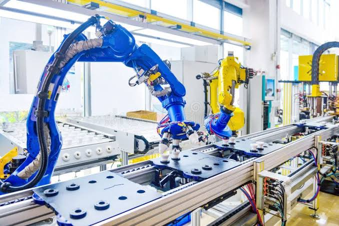

Gestión y Planificación de la Producción
La gestión de la producción es el conjunto de metodologías utilizadas para organizar, dirigir y controlar los recursos físicos, humanos y económicos de una fábrica. Su objetivo principal es transformar las materias primas (como los pellets de polímero) en productos terminados de manera eficiente, respetando los tiempos de entrega acordados con el cliente.
Planificación Operativa
Para que la planta funcione en armonía, se requiere una correcta secuenciación de las órdenes de trabajo, una evaluación estricta de la capacidad instalada de las máquinas y una asignación inteligente de recursos operacionales. Sin esto, la fábrica cae en la improvisación y la ineficiencia.
Problemas Frecuentes en la Planta
- Retrasos en las órdenes: Incumplimiento de las fechas de despacho debido a falta de programación.
- Cuellos de botella: Acumulación de trabajo en una máquina específica (ej. la sopladora) que detiene el flujo general.
- Tiempos muertos: Máquinas paradas esperando material, moldes o instrucciones de los supervisores.
Ejemplos de Aplicación Industrial
- Programación de turnos basada en la demanda proyectada de envases plásticos para el próximo trimestre.
- Balanceo de la línea de ensamble automatizado para ecualizar los tiempos de operación entre estaciones.
- Estandarización del cambio de moldes en inyectoras para reducir los tiempos de preparación de maquinaria.

Matriz de Diagnóstico y Mejora de Producción
| Problema Identificado | Posibles Causas | Acciones de Mejora |
|---|---|---|
| Retrasos en órdenes | Falta de un programa maestro de producción (MPS). | Implementar un software ERP o tablero Kanban de control de órdenes. |
| Cuellos de botella | Capacidad desbalanceada de la maquinaria secundaria. | Redistribuir la carga de trabajo o capacitar operarios polivalentes. |
| Tiempos muertos | Mala coordinación en el suministro de materias primas. | Establecer un sistema de reabastecimiento sincronizado en las tolvas. |